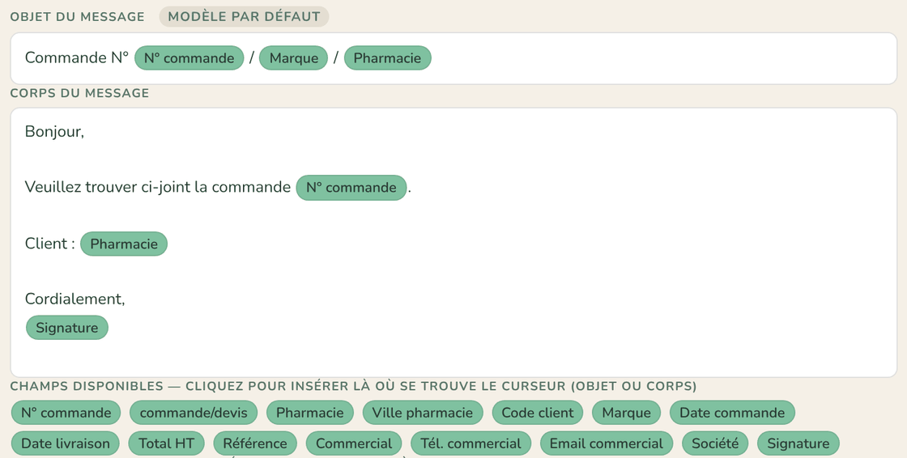
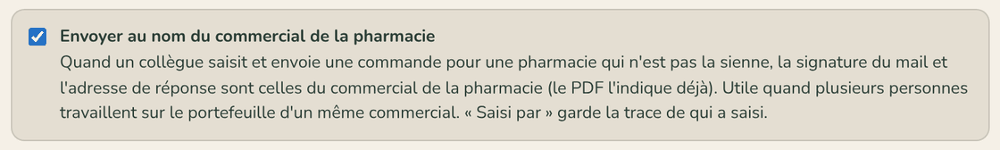
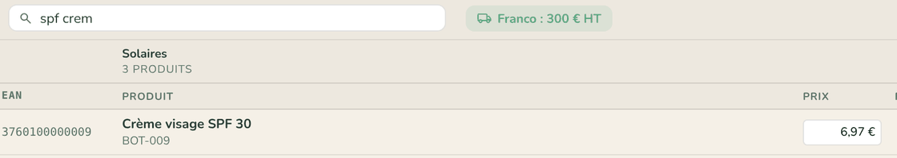

|
CelField.
NOUVEAUTÉS · N°1 · 3 NOVEMBRE 2026
Ce qui a changé ces quinze derniers jours
|
Bonjour,
Voici la première lettre CelField. Tous les quinze jours, nous vous présenterons soit les nouveautés de l'application, soit une fonction utile à connaître, en quelques minutes de lecture. Tout ce qui suit est déjà en place dans votre espace : il n'y a rien à installer.
|
| Paramètres |
| Des modèles d'e-mail plus faciles à modifier |
| Paramètres → Modèles d'email · administrateurs |
| Les champs du message (n° de commande, pharmacie, marque, signature…) apparaissent maintenant en étiquettes vertes. Placez le curseur où vous voulez, dans l'objet ou dans le corps, puis cliquez sur un champ : il s'insère à cet endroit. La touche Retour arrière retire une étiquette d'un coup. Une pastille indique si vous utilisez le modèle par défaut ou le vôtre, et l'aperçu montre le résultat sur votre dernière commande. |
 |
|
| Équipes |
| Envoyer au nom du commercial de la pharmacie |
| Paramètres → Modèles d'email · option à cocher |
| Une assistante ou un collègue saisit les commandes du portefeuille d'un commercial ? Cochez cette option : pour une pharmacie qui n'est pas la sienne, la signature du mail et l'adresse de réponse deviennent celles du commercial de la pharmacie. Le fournisseur répond donc à la bonne personne. « Saisi par » et le journal de la commande gardent la trace de qui a saisi. L'option est désactivée par défaut : rien ne change si vous ne la cochez pas. |
 |
|
| Saisie |
| La recherche accepte des morceaux de mots |
| Écran Commandes, onglet Catalogue · fiche fournisseur, onglet Produits |
| Tapez quelques lettres de plusieurs mots, dans l'ordre qui vous vient : « spf crem » trouve « Crème visage SPF 30 ». Accents et majuscules sont ignorés. Pratique pour retrouver un produit en quelques touches devant le pharmacien. |
 |
|
| En bref |
| Renommer un fournisseur — depuis sa fiche, le nouveau nom s'applique partout en une fois : catalogue, commandes, historique, pharmacies et statistiques. | | PDF de commande — pour une marque sans logo, son nom s'affiche en tête du bon à la place. | | Sous-agence — quand une pharmacie a changé de SIRET, CelField la reconnaît par son CIP, son téléphone ou son adresse et vous propose de confirmer, plutôt que de la refuser comme hors périmètre. |
|
|
| Dans quinze jours : préparer sa tournée hors ligne. Ce qu'il faut charger avant de partir, ce qui fonctionne sans réseau et ce qui se passe au retour du réseau. |
|
Une question, une idée d'amélioration ? Répondez simplement à ce message.
Bonne quinzaine,
Vincent — CelField
|
Vous recevez cette lettre parce que vous utilisez CelField.
Les captures sont faites sur un espace de démonstration aux données fictives.
celfield.com
|